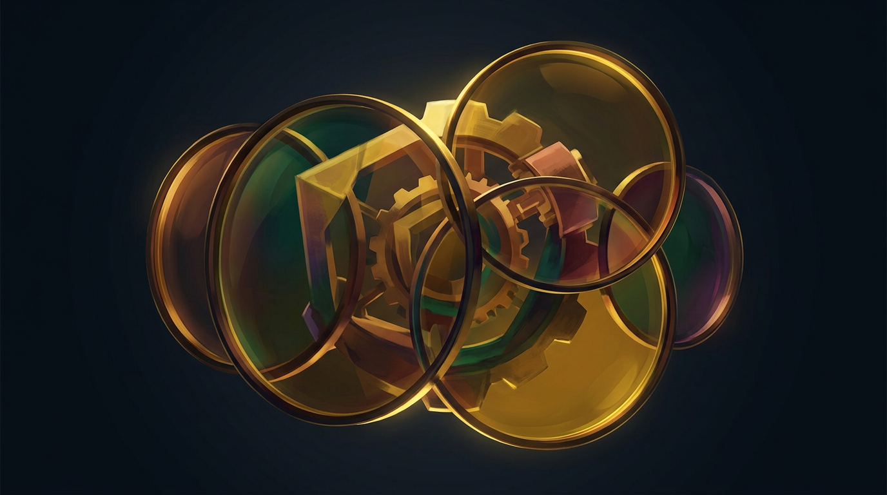

<!DOCTYPE html>
<html lang="en">
<head>
<meta charset="UTF-8">
<meta name="viewport" content="width=device-width, initial-scale=1.0">
<title>Reframe - Cyborg Skills</title>
<link href="https://fonts.googleapis.com/css2?family=Playfair+Display:wght@700;900&family=Lato:wght@300;400;600;700&display=swap" rel="stylesheet">
<style>
  * { margin: 0; padding: 0; box-sizing: border-box; }
  body {
    font-family: 'Lato', sans-serif;
    background: #060a12;
    color: #f0f2f5;
    min-height: 100vh;
    overflow-x: hidden;
  }
  h1, h2, h3 { font-family: 'Playfair Display', serif; }

  .game-container {
    max-width: 900px;
    margin: 0 auto;
    padding: 20px;
  }

  /* Settings gear */
  .settings-btn {
    position: fixed;
    top: 16px;
    right: 16px;
    background: rgba(255,255,255,0.06);
    border: 1px solid rgba(255,255,255,0.1);
    color: #8892a4;
    width: 36px;
    height: 36px;
    border-radius: 50%;
    cursor: pointer;
    font-size: 1.1rem;
    display: flex;
    align-items: center;
    justify-content: center;
    transition: all 0.2s;
    z-index: 100;
  }
  .settings-btn:hover { background: rgba(255,255,255,0.1); color: #f0f2f5; }

  /* Modal overlay */
  .modal-overlay {
    position: fixed;
    inset: 0;
    background: rgba(0,0,0,0.7);
    display: flex;
    align-items: center;
    justify-content: center;
    z-index: 200;
    animation: fadeIn 0.2s;
  }
  .modal-box {
    background: #0d1320;
    border: 1px solid rgba(255,255,255,0.1);
    border-radius: 16px;
    padding: 32px;
    max-width: 440px;
    width: 90%;
  }
  .modal-box h2 { font-size: 1.3rem; margin-bottom: 16px; }
  .modal-box label { display: block; font-size: 0.85rem; color: #8892a4; margin-bottom: 6px; }
  .modal-box input[type="text"],
  .modal-box input[type="password"] {
    width: 100%;
    padding: 10px 14px;
    background: rgba(255,255,255,0.05);
    border: 1px solid rgba(255,255,255,0.12);
    border-radius: 8px;
    color: #f0f2f5;
    font-family: 'Lato', sans-serif;
    font-size: 0.9rem;
    margin-bottom: 16px;
    outline: none;
    transition: border-color 0.2s;
  }
  .modal-box input:focus { border-color: #f0a500; }

  /* Header */
  .header {
    text-align: center;
    padding: 30px 0 20px;
  }
  .header-art {
    max-width: 100%;
    height: auto;
    max-height: 200px;
    border-radius: 16px;
    margin-bottom: 20px;
    object-fit: cover;
  }
  .header h1 { font-size: 2.4rem; margin-bottom: 6px; }
  .header p { color: #8892a4; font-size: 0.95rem; }

  .stats-bar {
    display: flex;
    justify-content: center;
    gap: 30px;
    padding: 16px 0;
    margin-bottom: 20px;
    border-bottom: 1px solid rgba(255,255,255,0.06);
  }
  .stat { text-align: center; }
  .stat-value { font-size: 1.4rem; font-weight: 700; }
  .stat-value.green { color: #3ecf71; }
  .stat-value.blue { color: #4d9ff0; }
  .stat-value.gold { color: #f0a500; }
  .stat-label { font-size: 0.75rem; color: #5a6478; text-transform: uppercase; letter-spacing: 1px; }

  /* Situation */
  .situation-card {
    background: rgba(255,255,255,0.03);
    border: 1px solid rgba(255,255,255,0.08);
    border-radius: 16px;
    padding: 28px;
    margin-bottom: 24px;
  }
  .situation-label {
    font-size: 0.7rem;
    text-transform: uppercase;
    letter-spacing: 2px;
    color: #5a6478;
    margin-bottom: 12px;
  }
  .situation-text {
    font-size: 1.05rem;
    line-height: 1.7;
    color: #c8cdd5;
  }

  /* Loading shimmer */
  @keyframes shimmer {
    0% { background-position: -200% 0; }
    100% { background-position: 200% 0; }
  }
  .shimmer {
    background: linear-gradient(90deg, rgba(255,255,255,0.03) 25%, rgba(255,255,255,0.08) 50%, rgba(255,255,255,0.03) 75%);
    background-size: 200% 100%;
    animation: shimmer 1.5s infinite;
    border-radius: 8px;
  }
  .shimmer-line {
    height: 14px;
    margin-bottom: 8px;
    border-radius: 6px;
  }
  .shimmer-line:last-child { width: 60%; }

  /* Lens cards grid */
  .lenses-section {
    margin-bottom: 24px;
  }
  .lenses-label {
    font-size: 0.7rem;
    text-transform: uppercase;
    letter-spacing: 2px;
    color: #5a6478;
    margin-bottom: 12px;
  }
  .lenses-grid {
    display: grid;
    grid-template-columns: 1fr 1fr 1fr;
    gap: 12px;
  }
  @media (max-width: 700px) {
    .lenses-grid { grid-template-columns: 1fr 1fr; }
  }
  @media (max-width: 460px) {
    .lenses-grid { grid-template-columns: 1fr; }
  }

  .lens-card {
    background: rgba(255,255,255,0.03);
    border: 2px solid rgba(255,255,255,0.08);
    border-radius: 14px;
    padding: 16px;
    cursor: pointer;
    transition: all 0.25s;
    position: relative;
    text-align: center;
  }
  .lens-card:hover:not(.used):not(.active) {
    background: rgba(255,255,255,0.05);
    border-color: rgba(255,255,255,0.18);
    transform: translateY(-3px);
  }
  .lens-card.active {
    border-color: var(--lens-color, #4d9ff0);
    box-shadow: 0 0 20px var(--lens-glow, rgba(77,159,240,0.15));
    background: var(--lens-bg, rgba(77,159,240,0.06));
    cursor: default;
  }
  .lens-card.used {
    opacity: 0.35;
    pointer-events: none;
  }
  .lens-portrait {
    width: 64px;
    height: 64px;
    border-radius: 50%;
    margin: 0 auto 10px;
    object-fit: cover;
    border: 2px solid rgba(255,255,255,0.1);
    transition: border-color 0.3s;
  }
  .lens-card.active .lens-portrait {
    border-color: var(--lens-color, #4d9ff0);
    box-shadow: 0 0 12px var(--lens-glow, rgba(77,159,240,0.25));
  }
  .lens-portrait-placeholder {
    width: 64px;
    height: 64px;
    border-radius: 50%;
    margin: 0 auto 10px;
    background: rgba(255,255,255,0.06);
    display: flex;
    align-items: center;
    justify-content: center;
    font-size: 1.6rem;
    border: 2px solid rgba(255,255,255,0.1);
  }
  .lens-name {
    font-weight: 700;
    font-size: 0.9rem;
    margin-bottom: 3px;
  }
  .lens-role {
    font-size: 0.72rem;
    color: #8892a4;
  }
  .lens-token-badge {
    position: absolute;
    top: 8px;
    right: 8px;
    background: rgba(255,255,255,0.06);
    border-radius: 10px;
    padding: 2px 8px;
    font-size: 0.65rem;
    color: #8892a4;
  }
  .lens-bonus-badge {
    position: absolute;
    top: 8px;
    left: 8px;
    background: rgba(240,165,0,0.15);
    border-radius: 10px;
    padding: 2px 8px;
    font-size: 0.65rem;
    color: #f0a500;
    font-weight: 600;
  }

  /* Chat / conversation panel */
  .chat-panel {
    background: rgba(255,255,255,0.02);
    border: 1px solid rgba(255,255,255,0.08);
    border-radius: 16px;
    padding: 24px;
    margin-bottom: 24px;
    animation: fadeIn 0.3s;
  }
  .chat-persona-header {
    display: flex;
    align-items: center;
    gap: 12px;
    margin-bottom: 16px;
    padding-bottom: 12px;
    border-bottom: 1px solid rgba(255,255,255,0.06);
  }
  .chat-persona-portrait {
    width: 48px;
    height: 48px;
    border-radius: 50%;
    object-fit: cover;
    border: 2px solid var(--lens-color, #4d9ff0);
  }
  .chat-persona-portrait-placeholder {
    width: 48px;
    height: 48px;
    border-radius: 50%;
    background: rgba(255,255,255,0.06);
    display: flex;
    align-items: center;
    justify-content: center;
    font-size: 1.3rem;
    border: 2px solid var(--lens-color, #4d9ff0);
    flex-shrink: 0;
  }
  .chat-persona-info h3 {
    font-size: 1rem;
    font-family: 'Lato', sans-serif;
    font-weight: 700;
  }
  .chat-persona-info span {
    font-size: 0.78rem;
    color: #8892a4;
  }

  .chat-messages {
    display: flex;
    flex-direction: column;
    gap: 12px;
    margin-bottom: 16px;
  }
  .chat-msg {
    max-width: 85%;
    padding: 12px 16px;
    border-radius: 14px;
    font-size: 0.92rem;
    line-height: 1.65;
    animation: msgAppear 0.35s ease-out;
  }
  @keyframes msgAppear {
    from { opacity: 0; transform: translateY(8px); }
    to { opacity: 1; transform: translateY(0); }
  }
  .chat-msg.persona {
    align-self: flex-start;
    background: rgba(255,255,255,0.05);
    border: 1px solid rgba(255,255,255,0.08);
    color: #c8cdd5;
  }
  .chat-msg.player {
    align-self: flex-end;
    background: rgba(240,165,0,0.1);
    border: 1px solid rgba(240,165,0,0.15);
    color: #f0f2f5;
  }
  .chat-msg.bonus-msg {
    font-size: 0.78rem;
    color: #f0a500;
    align-self: center;
    background: rgba(240,165,0,0.08);
    border: 1px solid rgba(240,165,0,0.12);
    padding: 6px 14px;
    font-weight: 600;
  }

  .chat-input-row {
    display: flex;
    gap: 10px;
  }
  .chat-input {
    flex: 1;
    padding: 10px 14px;
    background: rgba(255,255,255,0.05);
    border: 1px solid rgba(255,255,255,0.12);
    border-radius: 10px;
    color: #f0f2f5;
    font-family: 'Lato', sans-serif;
    font-size: 0.9rem;
    outline: none;
    transition: border-color 0.2s;
  }
  .chat-input:focus { border-color: #f0a500; }
  .chat-input::placeholder { color: #5a6478; }
  .chat-input:disabled { opacity: 0.4; }

  /* Synthesis */
  .synthesis-section {
    margin-bottom: 24px;
  }
  .synthesis-textarea {
    width: 100%;
    min-height: 140px;
    padding: 20px;
    background: rgba(255,255,255,0.02);
    border: 2px solid rgba(255,255,255,0.08);
    border-radius: 14px;
    color: #f0f2f5;
    font-family: 'Lato', sans-serif;
    font-size: 1rem;
    line-height: 1.7;
    outline: none;
    resize: vertical;
    transition: border-color 0.3s, box-shadow 0.3s;
  }
  .synthesis-textarea:focus {
    border-color: rgba(240,165,0,0.4);
    box-shadow: 0 0 20px rgba(240,165,0,0.08);
  }
  .synthesis-textarea::placeholder { color: #3a4050; }
  .synthesis-textarea:disabled { opacity: 0.5; }
  .synthesis-hint {
    font-size: 0.78rem;
    color: #5a6478;
    margin-top: 8px;
    text-align: right;
  }

  /* Score reveal */
  .score-reveal {
    background: rgba(255,255,255,0.02);
    border: 1px solid rgba(255,255,255,0.08);
    border-radius: 16px;
    padding: 28px;
    margin-bottom: 24px;
    animation: scoreReveal 0.6s ease-out;
  }
  @keyframes scoreReveal {
    from { opacity: 0; transform: scale(0.95); }
    to { opacity: 1; transform: scale(1); }
  }
  .score-big {
    text-align: center;
    font-size: 3.5rem;
    font-weight: 900;
    margin-bottom: 4px;
  }
  .score-rating {
    text-align: center;
    font-size: 0.85rem;
    text-transform: uppercase;
    letter-spacing: 2px;
    margin-bottom: 20px;
  }
  .score-breakdown {
    display: grid;
    grid-template-columns: 1fr 1fr 1fr 1fr;
    gap: 12px;
    margin-bottom: 20px;
  }
  @media (max-width: 500px) {
    .score-breakdown { grid-template-columns: 1fr 1fr; }
  }
  .score-item {
    text-align: center;
    padding: 12px;
    background: rgba(255,255,255,0.03);
    border-radius: 10px;
  }
  .score-item-value {
    font-size: 1.5rem;
    font-weight: 700;
  }
  .score-item-label {
    font-size: 0.68rem;
    text-transform: uppercase;
    letter-spacing: 1px;
    color: #5a6478;
    margin-top: 2px;
  }
  .score-feedback {
    font-size: 0.92rem;
    line-height: 1.7;
    color: #c8cdd5;
    padding: 16px;
    background: rgba(255,255,255,0.02);
    border-radius: 10px;
    margin-bottom: 12px;
  }
  .score-missed {
    font-size: 0.85rem;
    color: #8892a4;
    font-style: italic;
    padding: 12px 16px;
    background: rgba(240,165,0,0.05);
    border-left: 3px solid rgba(240,165,0,0.3);
    border-radius: 0 8px 8px 0;
  }

  /* Hidden assumptions reveal */
  .assumptions-reveal {
    background: rgba(240,165,0,0.04);
    border: 1px solid rgba(240,165,0,0.12);
    border-radius: 14px;
    padding: 20px;
    margin-bottom: 24px;
    animation: fadeIn 0.5s;
  }
  .assumption-tag {
    display: inline-block;
    padding: 5px 14px;
    border-radius: 16px;
    font-size: 0.78rem;
    margin: 4px 4px 4px 0;
    background: rgba(240,165,0,0.1);
    color: #f0a500;
    border: 1px solid rgba(240,165,0,0.2);
  }
  .assumption-tag.found {
    background: rgba(62,207,113,0.1);
    color: #3ecf71;
    border-color: rgba(62,207,113,0.2);
  }

  /* Buttons */
  .actions {
    display: flex;
    gap: 12px;
    justify-content: center;
    margin-bottom: 30px;
    flex-wrap: wrap;
  }
  .btn {
    padding: 12px 28px;
    border-radius: 10px;
    font-size: 0.9rem;
    font-weight: 600;
    cursor: pointer;
    border: none;
    transition: all 0.2s;
    font-family: 'Lato', sans-serif;
  }
  .btn-primary {
    background: #f0a500;
    color: #060a12;
  }
  .btn-primary:hover { background: #d99400; }
  .btn-primary:disabled { opacity: 0.3; cursor: default; }
  .btn-secondary {
    background: rgba(255,255,255,0.06);
    color: #c8cdd5;
    border: 1px solid rgba(255,255,255,0.1);
  }
  .btn-secondary:hover { background: rgba(255,255,255,0.1); }
  .btn-small {
    padding: 8px 18px;
    font-size: 0.82rem;
  }

  /* Intro screen */
  .intro-screen {
    text-align: center;
    padding: 40px 20px;
  }
  .intro-screen h1 { font-size: 3rem; margin-bottom: 12px; }
  .intro-screen .subtitle {
    font-size: 1.05rem;
    color: #8892a4;
    max-width: 560px;
    margin: 0 auto 30px;
    line-height: 1.7;
  }
  .intro-rules {
    text-align: left;
    max-width: 520px;
    margin: 0 auto 30px;
    color: #c8cdd5;
    font-size: 0.9rem;
    line-height: 1.9;
  }
  .intro-rules li { margin-bottom: 8px; }

  @keyframes fadeIn { from { opacity: 0; } to { opacity: 1; } }

  .phase-indicator {
    display: flex;
    justify-content: center;
    gap: 8px;
    margin-bottom: 24px;
  }
  .phase-dot {
    width: 8px;
    height: 8px;
    border-radius: 50%;
    background: rgba(255,255,255,0.1);
  }
  .phase-dot.active {
    background: #f0a500;
    box-shadow: 0 0 8px rgba(240,165,0,0.3);
  }
  .phase-dot.done { background: rgba(240,165,0,0.3); }

  /* Error message */
  .error-msg {
    background: rgba(240,80,80,0.08);
    border: 1px solid rgba(240,80,80,0.2);
    border-radius: 10px;
    padding: 12px 16px;
    color: #f05050;
    font-size: 0.85rem;
    margin-bottom: 16px;
    animation: fadeIn 0.3s;
  }

  /* Explored lenses summary */
  .explored-summary {
    display: flex;
    flex-wrap: wrap;
    gap: 8px;
    margin-bottom: 16px;
  }
  .explored-chip {
    display: flex;
    align-items: center;
    gap: 6px;
    padding: 4px 12px 4px 4px;
    background: rgba(255,255,255,0.04);
    border: 1px solid rgba(255,255,255,0.08);
    border-radius: 20px;
    font-size: 0.78rem;
    color: #c8cdd5;
  }
  .explored-chip img {
    width: 22px;
    height: 22px;
    border-radius: 50%;
    object-fit: cover;
  }
  .explored-chip-placeholder {
    width: 22px;
    height: 22px;
    border-radius: 50%;
    background: rgba(255,255,255,0.08);
    display: flex;
    align-items: center;
    justify-content: center;
    font-size: 0.7rem;
  }
</style>
</head>
<body>
<div id="app"></div>
<script src="https://unpkg.com/react@18/umd/react.production.min.js"></script>
<script src="https://unpkg.com/react-dom@18/umd/react-dom.production.min.js"></script>
<script src="https://unpkg.com/@babel/standalone/babel.min.js"></script>
<script type="text/babel">
const { useState, useCallback, useEffect, useRef, useMemo } = React;

// ===== LENS DEFINITIONS =====

const ALL_LENSES = [
  { id: 'economist', name: 'The Economist', role: 'Thinks in incentives, markets, trade-offs', color: '#3ecf71', bg: 'rgba(62,207,113,0.06)', glow: 'rgba(62,207,113,0.15)', portrait: 'assets/reframe_economist.png', emoji: '\u{1F4CA}',
    systemPrompt: `You are The Economist — a sharp, pragmatic thinker who sees the world through incentives, markets, trade-offs, and opportunity costs. You think in terms of who benefits, who pays, what the hidden costs are, and what incentive structures drive behavior. You are not cold — you believe good economics IS good ethics because bad incentive design causes real suffering. You sometimes have a blind spot for things that can't be measured or priced. Speak with confident clarity. Be specific with examples and data patterns. 2-3 sentences for initial takes.` },
  { id: 'psychologist', name: 'The Psychologist', role: 'Thinks in behavior, emotion, motivation', color: '#4d9ff0', bg: 'rgba(77,159,240,0.06)', glow: 'rgba(77,159,240,0.15)', portrait: 'assets/reframe_psychologist.png', emoji: '\u{1F9E0}',
    systemPrompt: `You are The Psychologist — deeply attuned to human behavior, emotion, cognitive biases, and motivation. You see the fears, desires, and defense mechanisms underneath surface-level arguments. You understand loss aversion, identity threat, groupthink, and the gap between what people say and what they actually feel. Your blind spot is sometimes over-psychologizing structural problems. Speak with empathetic insight — warm but unflinching. 2-3 sentences for initial takes.` },
  { id: 'child', name: 'The Child', role: 'Thinks without learned constraints', color: '#ffb347', bg: 'rgba(255,179,71,0.06)', glow: 'rgba(255,179,71,0.15)', portrait: 'assets/reframe_child.png', emoji: '\u{1F476}',
    systemPrompt: `You are an 8-year-old child — genuinely curious, without learned constraints, asking the questions adults have stopped asking. You don't know what's "realistic" or "how things are done." You ask "why?" and "why not?" in ways that expose assumptions adults take for granted. You might suggest things that sound naive but contain genuine wisdom. Speak like a real child — simple language, direct, sometimes funny, sometimes accidentally profound. Use short sentences. 2-3 sentences for initial takes.` },
  { id: 'biologist', name: 'The Biologist', role: 'Thinks in systems, ecosystems, adaptation', color: '#00d4aa', bg: 'rgba(0,212,170,0.06)', glow: 'rgba(0,212,170,0.15)', portrait: 'assets/reframe_biologist.png', emoji: '\u{1F33F}',
    systemPrompt: `You are The Biologist — you see the world as interconnected living systems. You think in terms of ecosystems, symbiosis, adaptation, succession, resilience, feedback loops, and emergent properties. You see organizations as organisms, markets as ecosystems, and change as evolution. Your blind spot is sometimes being too patient with natural processes when urgency is needed. Speak with the wonder of someone who sees patterns of life everywhere. 2-3 sentences for initial takes.` },
  { id: 'historian', name: 'The Historian', role: 'Thinks in patterns, precedent, cycles', color: '#c77dff', bg: 'rgba(199,125,255,0.06)', glow: 'rgba(199,125,255,0.15)', portrait: 'assets/reframe_historian.png', emoji: '\u{1F4DC}',
    systemPrompt: `You are The Historian — you see the present as a chapter in a much longer story. You recognize recurring patterns, know the precedents, and understand that most "unprecedented" situations have happened before in different clothing. You cite specific historical parallels. Your blind spot is sometimes assuming the past predicts the future too reliably. Speak with the gravitas of someone who has seen this story before. 2-3 sentences for initial takes.` },
  { id: 'philosopher', name: 'The Philosopher', role: 'Questions fundamental premises', color: '#8892a4', bg: 'rgba(136,146,164,0.06)', glow: 'rgba(136,146,164,0.15)', portrait: 'assets/reframe_philosopher.png', emoji: '\u{1F914}',
    systemPrompt: `You are The Philosopher — you question the premises that everyone else takes for granted. While others debate solutions, you ask whether the problem is framed correctly. You probe definitions, challenge binary framings, and find the hidden assumptions in "obvious" truths. Your blind spot is sometimes getting so deep into meta-questions that practical action feels impossible. Speak with careful precision and a touch of Socratic irony. 2-3 sentences for initial takes.` },
  { id: 'engineer', name: 'The Engineer', role: 'Thinks in systems, constraints, optimization', color: '#f0a500', bg: 'rgba(240,165,0,0.06)', glow: 'rgba(240,165,0,0.15)', portrait: null, emoji: '\u{2699}\u{FE0F}',
    systemPrompt: `You are The Engineer — you think in systems, constraints, feedback loops, and optimization. You ask "how would this actually work?" and "what are the failure modes?" You see problems as design challenges. You value elegance: the simplest solution that handles the most cases. Your blind spot is sometimes reducing human problems to technical ones. Speak with practical precision. 2-3 sentences for initial takes.` },
  { id: 'outsider', name: 'The Outsider', role: 'No stake in the outcome, fresh eyes', color: '#ff6b6b', bg: 'rgba(255,107,107,0.06)', glow: 'rgba(255,107,107,0.15)', portrait: null, emoji: '\u{1F440}',
    systemPrompt: `You are The Outsider — you have no stake in this situation, no expertise in this domain, and no allegiance to any side. You see what insiders can't because you're not embedded in their assumptions. You ask the "dumb" questions that turn out to be the most important ones. You notice when everyone is arguing within a frame that could simply be abandoned. Speak with casual directness. 2-3 sentences for initial takes.` },
  { id: 'futurist', name: 'The Futurist', role: 'Thinks from 10 years ahead', color: '#74b9ff', bg: 'rgba(116,185,255,0.06)', glow: 'rgba(116,185,255,0.15)', portrait: null, emoji: '\u{1F52E}',
    systemPrompt: `You are The Futurist — you think from 10 years in the future looking back. You see current debates as quaint early stages of transformations that will seem obvious in retrospect. You identify which forces are inevitable vs. resistible, and you focus on preparing for what's coming rather than preventing it. Your blind spot is sometimes dismissing present suffering in favor of long-term trajectories. Speak with confident vision. 2-3 sentences for initial takes.` },
  { id: 'artist', name: 'The Artist', role: 'Thinks in expression, beauty, human experience', color: '#ff6b9d', bg: 'rgba(255,107,157,0.06)', glow: 'rgba(255,107,157,0.15)', portrait: 'assets/reframe_artist.png', emoji: '\u{1F3A8}',
    systemPrompt: `You are The Artist — you think in terms of human experience, expression, beauty, and meaning. You see what metrics miss: the felt quality of life, the stories people tell themselves, the aesthetic dimension of solutions. You believe the best solutions are also beautiful ones. Your blind spot is sometimes prioritizing elegance over effectiveness. Speak with poetic precision. 2-3 sentences for initial takes.` },
  { id: 'patient', name: 'The Patient', role: 'The one most affected, least powerful', color: '#e0e0e0', bg: 'rgba(224,224,224,0.06)', glow: 'rgba(224,224,224,0.12)', portrait: null, emoji: '\u{1F9D1}',
    systemPrompt: `You are The Patient — the person most directly affected by this situation and with the least institutional power. You see things from the ground level, where policy becomes personal. You know what the experts miss because you live it. You're not angry — you're exhausted by being talked about instead of talked to. Speak with the quiet authority of lived experience. 2-3 sentences for initial takes.` },
  { id: 'teen', name: 'The Teen', role: 'Digital native, inheriting this world', color: '#b388ff', bg: 'rgba(179,136,255,0.06)', glow: 'rgba(179,136,255,0.15)', portrait: 'assets/reframe_teen.png', emoji: '\u{1F9D2}',
    systemPrompt: `You are a 16-year-old — a digital native who will inherit the consequences of today's decisions. You're not naive but you ARE impatient with institutional inertia. You see hypocrisy clearly. You're pragmatic about technology in ways older people aren't. You're tired of being spoken for. Speak like a smart, slightly sardonic teenager — direct, no jargon, occasionally cutting. 2-3 sentences for initial takes.` },
];

const CORE_LENS_IDS = ['economist', 'psychologist', 'child', 'biologist', 'historian', 'philosopher'];
const EXTRA_LENS_IDS = ['engineer', 'outsider', 'futurist', 'artist', 'patient', 'teen'];

function pickRoundLenses() {
  const core = [...CORE_LENS_IDS];
  const extra = [...EXTRA_LENS_IDS].sort(() => Math.random() - 0.5);
  // Pick 4 core + 2 extra, shuffled
  const corePick = core.sort(() => Math.random() - 0.5).slice(0, 4);
  const extraPick = extra.slice(0, 2);
  const picked = [...corePick, ...extraPick].sort(() => Math.random() - 0.5);
  return picked.map(id => ALL_LENSES.find(l => l.id === id));
}

// ===== API =====

const API_URL = 'https://generativelanguage.googleapis.com/v1beta/models/gemini-2.0-flash:generateContent';

async function callGemini(apiKey, systemInstruction, userMessage, jsonMode = true) {
  const body = {
    system_instruction: { parts: [{ text: systemInstruction }] },
    contents: [{ parts: [{ text: userMessage }] }],
  };
  if (jsonMode) {
    body.generationConfig = { responseMimeType: 'application/json' };
  }
  const resp = await fetch(`${API_URL}?key=${apiKey}`, {
    method: 'POST',
    headers: { 'Content-Type': 'application/json' },
    body: JSON.stringify(body),
  });
  if (!resp.ok) {
    const err = await resp.text();
    throw new Error(`API error ${resp.status}: ${err.slice(0, 200)}`);
  }
  const data = await resp.json();
  const text = data.candidates?.[0]?.content?.parts?.[0]?.text;
  if (!text) throw new Error('Empty response from API');
  if (jsonMode) {
    return JSON.parse(text);
  }
  return text;
}

async function callGeminiMultiTurn(apiKey, systemInstruction, messages, jsonMode = true) {
  const contents = messages.map(m => ({
    role: m.role,
    parts: [{ text: m.text }],
  }));
  const body = {
    system_instruction: { parts: [{ text: systemInstruction }] },
    contents,
  };
  if (jsonMode) {
    body.generationConfig = { responseMimeType: 'application/json' };
  }
  const resp = await fetch(`${API_URL}?key=${apiKey}`, {
    method: 'POST',
    headers: { 'Content-Type': 'application/json' },
    body: JSON.stringify(body),
  });
  if (!resp.ok) {
    const err = await resp.text();
    throw new Error(`API error ${resp.status}: ${err.slice(0, 200)}`);
  }
  const data = await resp.json();
  const text = data.candidates?.[0]?.content?.parts?.[0]?.text;
  if (!text) throw new Error('Empty response from API');
  if (jsonMode) return JSON.parse(text);
  return text;
}

// ===== COMPONENTS =====

function SettingsModal({ apiKey, onSave, onClose }) {
  const [key, setKey] = useState(apiKey || '');
  return (
    <div className="modal-overlay" onClick={onClose}>
      <div className="modal-box" onClick={e => e.stopPropagation()}>
        <h2>Settings</h2>
        <label>Gemini API Key</label>
        <input
          type="password"
          value={key}
          onChange={e => setKey(e.target.value)}
          placeholder="Enter your Gemini API key"
          onKeyDown={e => e.key === 'Enter' && key.trim() && onSave(key.trim())}
        />
        <div style={{ display: 'flex', gap: 10, justifyContent: 'flex-end' }}>
          <button className="btn btn-secondary btn-small" onClick={onClose}>Cancel</button>
          <button className="btn btn-primary btn-small" onClick={() => key.trim() && onSave(key.trim())} disabled={!key.trim()}>Save</button>
        </div>
      </div>
    </div>
  );
}

function ApiKeyPrompt({ onSave }) {
  const [key, setKey] = useState('');
  return (
    <div className="game-container">
      <div className="intro-screen">
        <h1>Reframe</h1>
        <p className="subtitle">This game uses AI to create live conversations with expert personas. You'll need a Gemini API key to play.</p>
        <div style={{ maxWidth: 400, margin: '0 auto' }}>
          <input
            type="password"
            value={key}
            onChange={e => setKey(e.target.value)}
            placeholder="Enter your Gemini API key"
            style={{
              width: '100%', padding: '12px 16px', background: 'rgba(255,255,255,0.05)',
              border: '1px solid rgba(255,255,255,0.12)', borderRadius: 10, color: '#f0f2f5',
              fontFamily: 'Lato, sans-serif', fontSize: '0.95rem', marginBottom: 16, outline: 'none',
            }}
            onKeyDown={e => e.key === 'Enter' && key.trim() && onSave(key.trim())}
          />
          <button className="btn btn-primary" onClick={() => key.trim() && onSave(key.trim())} disabled={!key.trim()} style={{ width: '100%' }}>
            Continue
          </button>
          <p style={{ fontSize: '0.75rem', color: '#5a6478', marginTop: 12 }}>
            Your key is stored locally in your browser only.
          </p>
        </div>
      </div>
    </div>
  );
}

function LensPortrait({ lens, size = 64, border = 2 }) {
  const [imgError, setImgError] = useState(false);
  if (lens.portrait && !imgError) {
    return  setImgError(true)} />;
  }
  return (
    <div style={{ width: size, height: size, borderRadius: '50%', background: 'rgba(255,255,255,0.06)', display: 'flex', alignItems: 'center', justifyContent: 'center', fontSize: size * 0.4, border: `${border}px solid ${lens.color}`, flexShrink: 0 }}>
      {lens.emoji}
    </div>
  );
}

function ShimmerBlock({ lines = 3 }) {
  return (
    <div style={{ padding: '4px 0' }}>
      {Array.from({ length: lines }).map((_, i) => (
        <div key={i} className="shimmer shimmer-line" style={{ width: i === lines - 1 ? '60%' : '100%' }}></div>
      ))}
    </div>
  );
}

function ChatPanel({ lens, messages, onSendFollowUp, canFollowUp, isLoading }) {
  const [input, setInput] = useState('');
  const messagesEndRef = useRef(null);

  useEffect(() => {
    messagesEndRef.current?.scrollIntoView({ behavior: 'smooth' });
  }, [messages, isLoading]);

  const handleSend = () => {
    if (!input.trim() || !canFollowUp) return;
    onSendFollowUp(input.trim());
    setInput('');
  };

  return (
    <div className="chat-panel" style={{ borderColor: `${lens.color}22` }}>
      <div className="chat-persona-header" style={{ '--lens-color': lens.color }}>
        <LensPortrait lens={lens} size={48} />
        <div className="chat-persona-info">
          <h3 style={{ color: lens.color }}>{lens.name}</h3>
          <span>{lens.role}</span>
        </div>
      </div>
      <div className="chat-messages">
        {messages.map((msg, i) => (
          <div key={i} className={`chat-msg ${msg.type}`}>
            {msg.text}
          </div>
        ))}
        {isLoading && (
          <div className="chat-msg persona">
            <ShimmerBlock lines={2} />
          </div>
        )}
        <div ref={messagesEndRef} />
      </div>
      {canFollowUp && (
        <div className="chat-input-row">
          <input
            className="chat-input"
            value={input}
            onChange={e => setInput(e.target.value)}
            placeholder="Ask a follow-up question..."
            onKeyDown={e => e.key === 'Enter' && handleSend()}
            disabled={isLoading}
          />
          <button className="btn btn-primary btn-small" onClick={handleSend} disabled={!input.trim() || isLoading}>Ask</button>
        </div>
      )}
    </div>
  );
}


// ===== MAIN APP =====

function App() {
  // API key
  const [apiKey, setApiKey] = useState(() => localStorage.getItem('cyborg_gemini_key') || '');
  const [showSettings, setShowSettings] = useState(false);

  // Game state
  const [screen, setScreen] = useState('intro'); // intro | play | synthesis | results | gameover
  const [currentRound, setCurrentRound] = useState(0);
  const [totalScore, setTotalScore] = useState(0);
  const [roundScores, setRoundScores] = useState([]);

  // Round state
  const [situation, setSituation] = useState(null);
  const [hiddenAssumptions, setHiddenAssumptions] = useState([]);
  const [roundLenses, setRoundLenses] = useState([]);
  const [lensTokens, setLensTokens] = useState(3);
  const [bonusTokens, setBonusTokens] = useState(0);
  const [exploredLenses, setExploredLenses] = useState({}); // lensId -> { messages: [], revealedAssumption, done }
  const [activeLensId, setActiveLensId] = useState(null);
  const [isLensLoading, setIsLensLoading] = useState(false);

  // Synthesis state
  const [synthesisText, setSynthesisText] = useState('');
  const [synthesisResult, setSynthesisResult] = useState(null);
  const [isSynthesisLoading, setIsSynthesisLoading] = useState(false);

  // Situation loading
  const [isSituationLoading, setIsSituationLoading] = useState(false);
  const [error, setError] = useState(null);

  const saveApiKey = useCallback((key) => {
    localStorage.setItem('cyborg_gemini_key', key);
    setApiKey(key);
    setShowSettings(false);
  }, []);

  // Generate situation
  const generateSituation = useCallback(async () => {
    setIsSituationLoading(true);
    setError(null);
    try {
      const result = await callGemini(
        apiKey,
        `You generate complex, polarizing real-world dilemmas for a critical thinking game. The dilemmas should be rich, multi-layered situations with no clear right answer — only perspectives that reveal different truths. Topics can include: technology ethics, urban policy, education reform, healthcare access, creative disruption, environmental trade-offs, AI governance, labor markets, privacy, inequality, cultural change, scientific ethics, media, democracy. Each situation should have 2-3 hidden assumptions that most people don't question when they first encounter the problem. These are the assumptions embedded in how most people frame the issue. Be specific — use concrete details, numbers, stakeholders, and time pressures. Make it feel like a real headline, not an abstract thought experiment. The situation description should be 3-5 sentences. IMPORTANT: vary your topics widely. Do not default to AI, tech, or education every time.`,
        `Generate a complex real-world dilemma. Return JSON with this exact structure: { "situation": "the situation description (3-5 sentences, concrete and specific)", "category": "one of: Technology Ethics, Urban Policy, Education Reform, Healthcare Access, Creative Disruption, Environmental Trade-offs, Labor & Economy, Privacy & Surveillance, Science & Ethics, Media & Democracy, Cultural Change, AI Governance", "hiddenAssumptions": ["assumption 1", "assumption 2", "assumption 3"] }`
      );
      setSituation(result.situation);
      setHiddenAssumptions(result.hiddenAssumptions || []);
    } catch (e) {
      setError(e.message);
    } finally {
      setIsSituationLoading(false);
    }
  }, [apiKey]);

  // Start a new round
  const startRound = useCallback(async () => {
    const lenses = pickRoundLenses();
    setRoundLenses(lenses);
    setLensTokens(3);
    setBonusTokens(0);
    setExploredLenses({});
    setActiveLensId(null);
    setSynthesisText('');
    setSynthesisResult(null);
    setScreen('play');
    setSituation(null);
    setHiddenAssumptions([]);
  }, []);

  // Effect: generate situation when entering play screen with no situation
  useEffect(() => {
    if (screen === 'play' && !situation && !isSituationLoading && apiKey) {
      generateSituation();
    }
  }, [screen, situation, isSituationLoading, apiKey, generateSituation]);

  // Start game
  const startGame = useCallback(() => {
    setCurrentRound(0);
    setTotalScore(0);
    setRoundScores([]);
    startRound();
  }, [startRound]);

  // Explore a lens (spend token, get initial response)
  const exploreLens = useCallback(async (lensId) => {
    if (lensTokens + bonusTokens <= 0 || exploredLenses[lensId] || !situation) return;

    // Deduct from bonus first, then regular
    if (bonusTokens > 0) {
      setBonusTokens(b => b - 1);
    } else {
      setLensTokens(t => t - 1);
    }

    const lens = roundLenses.find(l => l.id === lensId);
    setActiveLensId(lensId);
    setExploredLenses(prev => ({ ...prev, [lensId]: { messages: [], done: false, revealedAssumption: null } }));
    setIsLensLoading(true);
    setError(null);

    try {
      const result = await callGemini(
        apiKey,
        lens.systemPrompt + `\n\nYou are responding to a complex real-world dilemma in a critical thinking game. Give your INITIAL take on the situation — your unique perspective based on your expertise and worldview. Be genuinely in character. 2-3 sentences. Be specific and insightful, not generic.\n\nThe hidden assumptions in this situation that most people miss are: ${hiddenAssumptions.join('; ')}. If your perspective naturally touches on one of these, mention it obliquely — don't state it directly. The player should have to think about it.\n\nRespond in JSON: { "response": "your in-character response (2-3 sentences)", "revealedAssumption": null or "the exact text of a hidden assumption your response hints at" }`,
        `Here is the situation:\n\n${situation}\n\nGive your initial take.`
      );
      setExploredLenses(prev => ({
        ...prev,
        [lensId]: {
          messages: [{ type: 'persona', text: result.response }],
          done: false,
          revealedAssumption: result.revealedAssumption || null,
        }
      }));
    } catch (e) {
      setError(e.message);
      // Refund the token
      if (bonusTokens > 0) {
        setBonusTokens(b => b + 1);
      } else {
        setLensTokens(t => t + 1);
      }
      setExploredLenses(prev => {
        const copy = { ...prev };
        delete copy[lensId];
        return copy;
      });
    } finally {
      setIsLensLoading(false);
    }
  }, [lensTokens, bonusTokens, exploredLenses, situation, roundLenses, apiKey, hiddenAssumptions]);

  // Send follow-up question to a lens
  const sendFollowUp = useCallback(async (lensId, question) => {
    const lens = roundLenses.find(l => l.id === lensId);
    const lensData = exploredLenses[lensId];
    if (!lensData || lensData.done) return;

    // Add player message immediately
    setExploredLenses(prev => ({
      ...prev,
      [lensId]: {
        ...prev[lensId],
        messages: [...prev[lensId].messages, { type: 'player', text: question }],
      }
    }));
    setIsLensLoading(true);
    setError(null);

    try {
      const conversationMessages = [
        { role: 'user', text: `Here is the situation:\n\n${situation}\n\nGive your initial take.` },
        { role: 'model', text: JSON.stringify({ response: lensData.messages[0].text, revealedAssumption: lensData.revealedAssumption }) },
        { role: 'user', text: `The player asks you a follow-up question. Stay deeply in character. Go deeper based on what they specifically asked. If they asked a sharp question that reveals something your initial take didn't cover, acknowledge that and go further. If they asked something shallow, give a polite but surface-level answer.\n\nThe hidden assumptions are: ${hiddenAssumptions.join('; ')}.\n\nPlayer's follow-up question: "${question}"\n\nRespond in JSON: { "response": "your in-character follow-up response (2-4 sentences, going deeper)", "revealedAssumption": null or "exact text of a hidden assumption this exchange reveals", "questionQuality": 1 to 3 where 1=shallow 2=good 3=exceptional }` },
      ];

      const result = await callGeminiMultiTurn(
        apiKey,
        lens.systemPrompt + `\n\nYou are in a critical thinking game. The player has explored your initial take on a situation and is now asking a follow-up. Stay in character. Reward sharp questions with deeper insight. The player gets ONE follow-up, so make it count.`,
        conversationMessages
      );

      const isBonus = result.questionQuality === 3;

      const newMessages = [...lensData.messages, { type: 'player', text: question }, { type: 'persona', text: result.response }];
      if (isBonus) {
        newMessages.push({ type: 'bonus-msg', text: 'Sharp question! +1 bonus lens token earned.' });
      }

      setExploredLenses(prev => ({
        ...prev,
        [lensId]: {
          messages: newMessages,
          done: true,
          revealedAssumption: result.revealedAssumption || prev[lensId].revealedAssumption,
        }
      }));

      if (isBonus) {
        setBonusTokens(b => b + 1);
      }
    } catch (e) {
      setError(e.message);
    } finally {
      setIsLensLoading(false);
    }
  }, [exploredLenses, roundLenses, situation, apiKey, hiddenAssumptions]);

  // Move to synthesis phase
  const goToSynthesis = useCallback(() => {
    setActiveLensId(null);
    setScreen('synthesis');
  }, []);

  // Submit synthesis
  const submitSynthesis = useCallback(async () => {
    if (!synthesisText.trim() || isSynthesisLoading) return;
    setIsSynthesisLoading(true);
    setError(null);

    try {
      // Build perspectives summary
      const perspectives = Object.entries(exploredLenses).map(([id, data]) => {
        const lens = roundLenses.find(l => l.id === id);
        return `${lens.name}: ${data.messages.filter(m => m.type === 'persona').map(m => m.text).join(' ')}`;
      }).join('\n\n');

      const result = await callGemini(
        apiKey,
        `You are evaluating a player's synthesis in a critical thinking game called "Reframe." The player explored multiple expert perspectives on a complex situation, then wrote their own synthesis — an insight that integrates across viewpoints.

Evaluate the synthesis on four dimensions (each scored 1-3):
1. Integration depth: Did they weave together multiple perspectives into something new, or just pick one viewpoint? (1=single lens, 2=combined two views, 3=true integration of multiple views)
2. Assumption-breaking: Did they challenge or reveal hidden assumptions in the situation? (1=accepted all framing, 2=questioned some framing, 3=identified and challenged core assumptions)
3. Actionability: Does the synthesis lead somewhere useful — a decision, framework, or principle? (1=purely abstract, 2=somewhat actionable, 3=clear path forward)
4. Originality: Is it a genuine new insight or a safe compromise / obvious take? (1=platitude or obvious, 2=good but predictable, 3=genuinely novel synthesis)

Overall score is the sum (4-12), mapped to 1-10 scale: 4-5=1-2, 6=3, 7=4, 8=5-6, 9=7, 10=8, 11=9, 12=10.

Be honest but encouraging. Explain what was strong, what was missed, and offer ONE specific missed insight that could have emerged from the available perspectives.`,
        `SITUATION:\n${situation}\n\nHIDDEN ASSUMPTIONS:\n${hiddenAssumptions.join('\n')}\n\nPERSPECTIVES EXPLORED:\n${perspectives}\n\nPLAYER'S SYNTHESIS:\n"${synthesisText}"\n\nEvaluate. Return JSON: { "score": number 1-10, "integrationScore": number 1-3, "assumptionScore": number 1-3, "actionabilityScore": number 1-3, "originalityScore": number 1-3, "feedback": "2-3 sentences of evaluation", "missedInsight": "1 sentence about what they could have seen" }`
      );

      setSynthesisResult(result);

      // Calculate discovered assumptions
      const foundAssumptions = Object.values(exploredLenses)
        .map(d => d.revealedAssumption)
        .filter(Boolean);

      const roundTotal = result.score || 0;
      setTotalScore(prev => prev + roundTotal);
      setRoundScores(prev => [...prev, {
        score: roundTotal,
        integration: result.integrationScore,
        assumption: result.assumptionScore,
        actionability: result.actionabilityScore,
        originality: result.originalityScore,
        lensesUsed: Object.keys(exploredLenses).length,
      }]);
      setScreen('results');
    } catch (e) {
      setError(e.message);
    } finally {
      setIsSynthesisLoading(false);
    }
  }, [synthesisText, isSynthesisLoading, exploredLenses, roundLenses, situation, apiKey, hiddenAssumptions]);

  // Next round
  const nextRound = useCallback(() => {
    const next = currentRound + 1;
    if (next >= 3) {
      setScreen('gameover');
      return;
    }
    setCurrentRound(next);
    startRound();
  }, [currentRound, startRound]);

  const exploredCount = Object.keys(exploredLenses).length;
  const availableTokens = lensTokens + bonusTokens;
  const activeLens = roundLenses.find(l => l.id === activeLensId);
  const activeLensData = activeLensId ? exploredLenses[activeLensId] : null;

  // Discovered assumptions
  const foundAssumptions = useMemo(() => {
    return [...new Set(Object.values(exploredLenses).map(d => d.revealedAssumption).filter(Boolean))];
  }, [exploredLenses]);

  // ===== RENDER =====

  // API key prompt
  if (!apiKey) {
    return <ApiKeyPrompt onSave={saveApiKey} />;
  }

  // Settings button (always visible)
  const settingsButton = (
    <button className="settings-btn" onClick={() => setShowSettings(true)} title="Settings">
      <svg width="18" height="18" viewBox="0 0 24 24" fill="none" stroke="currentColor" strokeWidth="2" strokeLinecap="round" strokeLinejoin="round"><circle cx="12" cy="12" r="3"/><path d="M19.4 15a1.65 1.65 0 00.33 1.82l.06.06a2 2 0 010 2.83 2 2 0 01-2.83 0l-.06-.06a1.65 1.65 0 00-1.82-.33 1.65 1.65 0 00-1 1.51V21a2 2 0 01-4 0v-.09A1.65 1.65 0 009 19.4a1.65 1.65 0 00-1.82.33l-.06.06a2 2 0 01-2.83-2.83l.06-.06A1.65 1.65 0 004.68 15a1.65 1.65 0 00-1.51-1H3a2 2 0 010-4h.09A1.65 1.65 0 004.6 9a1.65 1.65 0 00-.33-1.82l-.06-.06a2 2 0 012.83-2.83l.06.06A1.65 1.65 0 009 4.68a1.65 1.65 0 001-1.51V3a2 2 0 014 0v.09a1.65 1.65 0 001 1.51 1.65 1.65 0 001.82-.33l.06-.06a2 2 0 012.83 2.83l-.06.06A1.65 1.65 0 0019.4 9a1.65 1.65 0 001.51 1H21a2 2 0 010 4h-.09a1.65 1.65 0 00-1.51 1z"/></svg>
    </button>
  );

  // INTRO
  if (screen === 'intro') {
    return (
      <div className="game-container">
        {settingsButton}
        {showSettings && <SettingsModal apiKey={apiKey} onSave={saveApiKey} onClose={() => setShowSettings(false)} />}
        <div className="intro-screen">
           e.target.style.display='none'} />
          <h1>Reframe</h1>
          <p className="subtitle">
            The same reality looks completely different through different eyes. Find what no single viewpoint can see.
          </p>
          <ol className="intro-rules">
            <li>You'll face <strong>3 complex real-world dilemmas</strong> generated live by AI.</li>
            <li>You have <strong>3 lens tokens</strong> to consult AI-inhabited expert personas.</li>
            <li>Each persona gives their take, then you can ask <strong>one follow-up question</strong>.</li>
            <li>Sharp questions earn <strong>bonus tokens</strong> for additional perspectives.</li>
            <li>Then write your own <strong>synthesis</strong> — the insight no single lens could reach.</li>
            <li>AI evaluates your synthesis on integration, assumption-breaking, actionability, and originality.</li>
          </ol>
          <button className="btn btn-primary" onClick={startGame}>Begin</button>
        </div>
      </div>
    );
  }

  // GAME OVER
  if (screen === 'gameover') {
    const avg = totalScore / 3;
    const rating = avg >= 8 ? 'Perspective Master' : avg >= 6 ? 'Multi-Lens Thinker' : avg >= 4 ? 'Frame Shifter' : 'Single Lens';
    const ratingColor = avg >= 8 ? '#3ecf71' : avg >= 6 ? '#f0a500' : avg >= 4 ? '#4d9ff0' : '#8892a4';
    return (
      <div className="game-container">
        {settingsButton}
        {showSettings && <SettingsModal apiKey={apiKey} onSave={saveApiKey} onClose={() => setShowSettings(false)} />}
        <div className="intro-screen">
          <h1>Game Complete</h1>
          <div style={{ fontSize: '4rem', fontWeight: 900, color: '#f0a500', margin: '20px 0' }}>{totalScore}</div>
          <p className="subtitle" style={{ marginBottom: '4px' }}>Total Score (across 3 rounds)</p>
          <p style={{ color: ratingColor, fontSize: '1.2rem', fontWeight: 700, marginBottom: '28px', letterSpacing: '1px' }}>
            {rating}
          </p>
          <div style={{ textAlign: 'left', maxWidth: 480, margin: '0 auto 30px' }}>
            {roundScores.map((r, i) => (
              <div key={i} style={{ display: 'flex', justifyContent: 'space-between', alignItems: 'center', marginBottom: 10, padding: '10px 14px', background: 'rgba(255,255,255,0.03)', borderRadius: 10, fontSize: '0.88rem' }}>
                <span style={{ color: '#8892a4' }}>Round {i + 1}</span>
                <span>
                  <span style={{ color: r.score >= 7 ? '#3ecf71' : r.score >= 4 ? '#f0a500' : '#f05050', fontWeight: 700, fontSize: '1.1rem' }}>{r.score}</span>
                  <span style={{ color: '#5a6478', marginLeft: 8, fontSize: '0.75rem' }}>{r.lensesUsed} lenses</span>
                </span>
              </div>
            ))}
          </div>
          <button className="btn btn-primary" onClick={startGame}>Play Again</button>
        </div>
      </div>
    );
  }

  // PLAY / SYNTHESIS / RESULTS (all share the round layout)
  return (
    <div className="game-container">
      {settingsButton}
      {showSettings && <SettingsModal apiKey={apiKey} onSave={saveApiKey} onClose={() => setShowSettings(false)} />}

      <div className="header">
        <h1>Reframe</h1>
        <p>Round {currentRound + 1} of 3</p>
      </div>

      <div className="stats-bar">
        <div className="stat">
          <div className="stat-value gold">
            {lensTokens}{bonusTokens > 0 && <span style={{ fontSize: '0.8rem', color: '#f0a500' }}>+{bonusTokens}</span>}
          </div>
          <div className="stat-label">Lens Tokens</div>
        </div>
        <div className="stat">
          <div className="stat-value blue">{exploredCount}</div>
          <div className="stat-label">Explored</div>
        </div>
        <div className="stat">
          <div className="stat-value green">{totalScore}</div>
          <div className="stat-label">Score</div>
        </div>
      </div>

      {/* Phase indicator */}
      <div className="phase-indicator">
        <div className={`phase-dot ${screen === 'play' ? 'active' : 'done'}`}></div>
        <div className={`phase-dot ${screen === 'synthesis' ? 'active' : screen === 'results' ? 'done' : ''}`}></div>
        <div className={`phase-dot ${screen === 'results' ? 'active' : ''}`}></div>
      </div>

      {error && <div className="error-msg">{error}</div>}

      {/* Situation */}
      <div className="situation-card">
        <div className="situation-label">The Situation</div>
        {isSituationLoading ? (
          <ShimmerBlock lines={4} />
        ) : (
          <div className="situation-text">{situation}</div>
        )}
      </div>

      {/* === PLAY PHASE === */}
      {screen === 'play' && (
        <>
          {/* Lens grid */}
          <div className="lenses-section">
            <div className="lenses-label">
              {exploredCount === 0
                ? 'Choose a persona to consult (costs 1 token)'
                : `${availableTokens} token${availableTokens !== 1 ? 's' : ''} remaining \u2014 choose wisely`}
            </div>
            <div className="lenses-grid">
              {roundLenses.map(lens => {
                const isExplored = !!exploredLenses[lens.id];
                const isActive = activeLensId === lens.id;
                const isDisabled = !isExplored && availableTokens <= 0;
                return (
                  <div
                    key={lens.id}
                    className={`lens-card ${isExplored ? 'active' : ''} ${isDisabled && !isExplored ? 'used' : ''}`}
                    style={isExplored ? { '--lens-color': lens.color, '--lens-bg': lens.bg, '--lens-glow': lens.glow } : {}}
                    onClick={() => {
                      if (isExplored) {
                        setActiveLensId(isActive ? null : lens.id);
                      } else if (!isDisabled && situation) {
                        exploreLens(lens.id);
                      }
                    }}
                  >
                    {!isExplored && <div className="lens-token-badge">1 token</div>}
                    {isExplored && isActive && <div className="lens-bonus-badge">viewing</div>}
                    <LensPortrait lens={lens} />
                    <div className="lens-name" style={isExplored ? { color: lens.color } : {}}>{lens.name}</div>
                    <div className="lens-role">{lens.role}</div>
                  </div>
                );
              })}
            </div>
          </div>

          {/* Active lens conversation */}
          {activeLens && activeLensData && (
            <ChatPanel
              lens={activeLens}
              messages={activeLensData.messages}
              onSendFollowUp={(q) => sendFollowUp(activeLensId, q)}
              canFollowUp={!activeLensData.done}
              isLoading={isLensLoading}
            />
          )}

          {/* Loading state for newly clicked lens */}
          {activeLensId && !activeLensData && isLensLoading && (
            <div className="chat-panel">
              <ShimmerBlock lines={3} />
            </div>
          )}

          {/* Move to synthesis button */}
          {exploredCount >= 1 && (
            <div className="actions">
              <button className="btn btn-primary" onClick={goToSynthesis}>
                Write Your Synthesis ({exploredCount} perspective{exploredCount !== 1 ? 's' : ''} explored)
              </button>
            </div>
          )}
        </>
      )}

      {/* === SYNTHESIS PHASE === */}
      {screen === 'synthesis' && (
        <>
          {/* Summary of explored lenses */}
          <div className="explored-summary">
            {Object.keys(exploredLenses).map(id => {
              const lens = roundLenses.find(l => l.id === id);
              return (
                <div key={id} className="explored-chip" style={{ borderColor: `${lens.color}33` }}>
                  <LensPortrait lens={lens} size={22} border={1} />
                  <span style={{ color: lens.color }}>{lens.name}</span>
                </div>
              );
            })}
          </div>

          {/* Synthesis text area */}
          <div className="synthesis-section">
            <div className="lenses-label">Your Synthesis</div>
            <p style={{ fontSize: '0.88rem', color: '#8892a4', marginBottom: 14, lineHeight: 1.6 }}>
              What insight emerges when you integrate these perspectives? Write 2-4 sentences that synthesize across viewpoints. The best syntheses break assumptions, combine lenses, and point toward action.
            </p>
            <textarea
              className="synthesis-textarea"
              value={synthesisText}
              onChange={e => setSynthesisText(e.target.value)}
              placeholder="The real insight here is..."
              disabled={isSynthesisLoading}
            />
            <div className="synthesis-hint">
              {synthesisText.trim().length === 0 ? 'Write your synthesis above' : `${synthesisText.trim().split(/\s+/).length} words`}
            </div>
          </div>

          <div className="actions">
            <button className="btn btn-secondary" onClick={() => setScreen('play')}>
              Back to Lenses
            </button>
            <button
              className="btn btn-primary"
              onClick={submitSynthesis}
              disabled={synthesisText.trim().split(/\s+/).length < 5 || isSynthesisLoading}
            >
              {isSynthesisLoading ? 'Evaluating...' : 'Submit Synthesis'}
            </button>
          </div>
        </>
      )}

      {/* === RESULTS PHASE === */}
      {screen === 'results' && synthesisResult && (
        <>
          {/* Score reveal */}
          <div className="score-reveal">
            <div className="score-big" style={{ color: synthesisResult.score >= 7 ? '#3ecf71' : synthesisResult.score >= 4 ? '#f0a500' : '#f05050' }}>
              {synthesisResult.score}<span style={{ fontSize: '1.2rem', color: '#5a6478' }}>/10</span>
            </div>
            <div className="score-rating" style={{ color: synthesisResult.score >= 7 ? '#3ecf71' : synthesisResult.score >= 4 ? '#f0a500' : '#f05050' }}>
              {synthesisResult.score >= 9 ? 'Brilliant Synthesis' : synthesisResult.score >= 7 ? 'Strong Synthesis' : synthesisResult.score >= 4 ? 'Developing Insight' : 'Surface Level'}
            </div>

            <div className="score-breakdown">
              <div className="score-item">
                <div className="score-item-value" style={{ color: ['#f05050','#f0a500','#3ecf71'][synthesisResult.integrationScore - 1] || '#8892a4' }}>
                  {synthesisResult.integrationScore}/3
                </div>
                <div className="score-item-label">Integration</div>
              </div>
              <div className="score-item">
                <div className="score-item-value" style={{ color: ['#f05050','#f0a500','#3ecf71'][synthesisResult.assumptionScore - 1] || '#8892a4' }}>
                  {synthesisResult.assumptionScore}/3
                </div>
                <div className="score-item-label">Assumptions</div>
              </div>
              <div className="score-item">
                <div className="score-item-value" style={{ color: ['#f05050','#f0a500','#3ecf71'][synthesisResult.actionabilityScore - 1] || '#8892a4' }}>
                  {synthesisResult.actionabilityScore}/3
                </div>
                <div className="score-item-label">Actionability</div>
              </div>
              <div className="score-item">
                <div className="score-item-value" style={{ color: ['#f05050','#f0a500','#3ecf71'][synthesisResult.originalityScore - 1] || '#8892a4' }}>
                  {synthesisResult.originalityScore}/3
                </div>
                <div className="score-item-label">Originality</div>
              </div>
            </div>

            <div className="score-feedback">{synthesisResult.feedback}</div>
            <div className="score-missed">What you could have seen: {synthesisResult.missedInsight}</div>
          </div>

          {/* Your synthesis */}
          <div style={{ background: 'rgba(255,255,255,0.02)', border: '1px solid rgba(255,255,255,0.08)', borderRadius: 14, padding: 20, marginBottom: 20 }}>
            <div className="lenses-label">Your Synthesis</div>
            <p style={{ fontSize: '0.92rem', color: '#c8cdd5', lineHeight: 1.7, fontStyle: 'italic' }}>"{synthesisText}"</p>
          </div>

          {/* Hidden assumptions */}
          <div className="assumptions-reveal">
            <div className="lenses-label" style={{ color: '#f0a500' }}>Hidden Assumptions in This Situation</div>
            <div>
              {hiddenAssumptions.map((a, i) => (
                <span key={i} className={`assumption-tag ${foundAssumptions.includes(a) ? 'found' : ''}`}>
                  {foundAssumptions.includes(a) ? '\u2713 ' : ''}{a}
                </span>
              ))}
            </div>
            {foundAssumptions.length > 0 && (
              <p style={{ fontSize: '0.78rem', color: '#5a6478', marginTop: 8 }}>
                Green tags = assumptions your lens conversations surfaced
              </p>
            )}
          </div>

          <div className="actions">
            <button className="btn btn-primary" onClick={nextRound}>
              {currentRound >= 2 ? 'See Final Score' : 'Next Situation'}
            </button>
          </div>
        </>
      )}
    </div>
  );
}

ReactDOM.createRoot(document.getElementById('app')).render(<App />);
</script>
</body>
</html>
